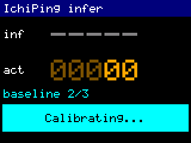
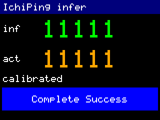
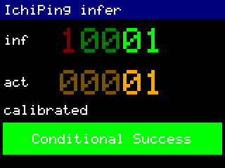
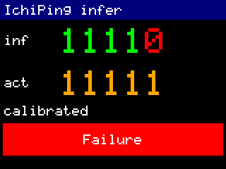

IchiPing on Solist-AI 簡易マニュアル
EdgeTech+ 2026 / 操作仕様：08668a8 / 2026年11月16日
01セッティング
用意するもの：SolistAI本体、コントローラボックス、ハウス模型、電源（DC5V）。
- 平らな台に設置する
ハウス模型とコントローラボックスを並べます。Solist-AIはコントローラボックス上部に設置されています。
- 電源を切った状態で配線を確認する
ハウス模型とコントローラボックスのケーブルが接続されていることを確認します。
- 電源を接続する
Solist-AIに電源供給用USB Type-Cケーブルを接続し、コントローラボックスにDC5V電源を接続します。
- 全閉・基準音取得の完了を待つ
EXECを押さずに待ちます。窓・扉が自動で全閉となり、基準音を3回取得します。動作中はハウス模型に触れないでください。
コントローラボックスへのDC5V電源を一度切り、再度投入してください。



02推論
- トグルで窓・扉の開閉状態を選ぶ
対応する窓・扉が動くことを確認します。ハウス模型の可動部を手で動かさないでください。
- EXECを短押しして離す（2秒未満）
離した時点で推論を開始します。
- 測定音が止まっても、結果が出るまで待つ
Listening... → Transferring... → Inferring... → 結果の順です。処理中はトグル・EXECを操作しないでください。
上段inf＝AIの推定結果、下段act＝トグルの指定状態。
左からc・BC・b・AB・a。1＝開、0＝閉です。



誤判定が続く場合は、機器間の接続と窓・扉の動作を確認し、次のODLを実施します。
03ODL（現地校正）
設置環境に合わせて本体で追加学習します。所要時間は約30分を見込んでください。
- EXECを約2秒押し、案内が出たら離す
Release: add ODLが出たら離します。10秒まで押し続けないでください。
- Add ODL?を確認し、5個のトグルをすべてOPENにする
確認待ちの間は、トグルを切り替えても窓・扉は追従しません。
- EXECをもう一度押して離す
Additional ODLまたはNew ODLで開始します。窓・扉を自動で動かし、全32状態を学習します。
- Calibratedの表示で完了を確認する
結果は保存され、電源再投入後も復元されます。再度ODLすると、保存済みの学習状態に追加して学習します。


| 確認をキャンセル | 1個以上のトグルをCLOSEにして、EXECを再度押します。 |
|---|---|
| 学習中に中断 | EXECを押し、処理の区切りまで待ちます。直前の保存状態に戻ります。 |
| 保存ODLを消去 | EXECを10秒押して離す → Reset ODL? → 全OPEN＋EXEC。事前学習モデルへ戻ります。 |
保存ODLがない場合は事前学習モデルから開始します。post-updateの正解数は学習直後の同じ音声による集計で、未知データへの精度ではありません。
改善しない場合は、その環境のデータセットを自動採取してPCで追加学習することもできます。GitHubリポジトリをクローンし、AIで資料・コードから方法を確認してください。